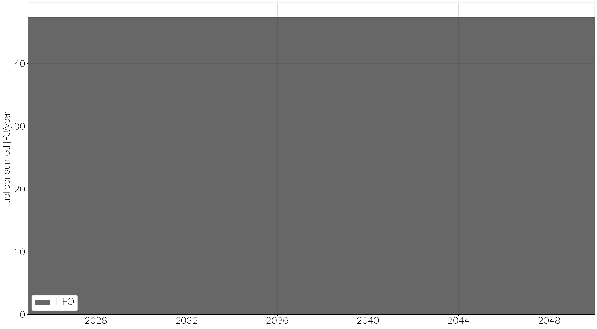

Recommended: run this notebook in Google Colab, nothing to install.
Just click on the “Open in Colab” button and follow along. Click the ▶ button on each cell (or press Shift+Enter) to see the results and move on to the next one.
The documentation website shows pre-run results you can check if you don’t want to or can’t use Colab.
Session 1: Test set-up#
This first session installs Navigate and checks your environment on a simulation that finishes in seconds.
Setup#
On Google Colab or in Jupyter, click Run on the next cell to install Navigate. It works in either environment, and you can re-run it if you come back to a Colab session that has gone idle.
Moved up to the repository root.
Navigate 1.0.0 is already installed.
usage: Navigate [-h] [-p] [-e] [-s] [-l {DEBUG,INFO,WARNING,ERROR}] [-d DIR]
[--solver {auto,gurobi,highs}] [-r PATH]
[PATH]
positional arguments:
PATH Path to the .nav simulation deck to run. When combined
with --replot, an optional .inc file with Plot node(s)
to use instead of the plot nodes stored in the plot
data.
options:
-h, --help show this help message and exit
-p, --profile Profile the computational performance of the
simulation. Note that this suppresses all output that
is not directly related to the simulation.
-e, --export-assumptions
Export Assumptions in an Excel format.
-s, --suppress-plots Suppress the generation of plots at the end of the
simulation. Note that Excel based output reports will
still be generated.
-l, --log-level {DEBUG,INFO,WARNING,ERROR}
Set the level of how much output is generated for the
.log file. DEBUG also prints the full traceback to the
console if the run fails.
-d, --data-dir DIR Folder location for assumptions that may be imported.
Can also be set with the environment variable
'ASSUMPTIONS_DATA_DIR'
--solver {auto,gurobi,highs}
Solver backend: 'auto' tries Gurobi then falls back to
HiGHS, 'gurobi' prefers Gurobi (falls back to HiGHS if
unlicensed), 'highs' skips Gurobi and uses HiGHS
directly. Default: auto.
-r, --replot PATH Regenerate plots from previously exported plot data.
Provide path to directory containing plot_data.pkl or
to the file directly. Skips simulation. Optionally
pass a .inc file with Plot node(s) as the trailing
argument to use those instead of the plot nodes stored
in the plot data.
Quick test: a minimal single-vessel deck#
The cell below writes a deck that reproduces the minimal single-vessel example from Tutorial 1.
For a little context from Tutorial 1, a deck is the input to a Navigate run:
one .nav file, plus the .inc files it includes. Navigate is the program, and
the deck is the instructions you hand it. Every .nav file has the same two
sections:
DEFINEsets out the nodes the simulation is made of: vessels, fuels, ports, routes, regulations and so on. A node is one declared thing, written as a type, a name in quotes, and a block of attributes.EVENTSsets out the timeline: the dates the model steps through, and any changes to nodes along the way.
Wrote quicktest/quicktest.nav and includes/
If the next cell produces a plot, your environment is working and you are ready to move on to
Session 2, the vessel case study. The link opens it in
Colab; if you are running locally, open it from docs/workshop/ instead.
import sys
%cd -q quicktest
!"{sys.executable}" -m navigate quicktest.nav
from IPython.display import Image, display
# One plot: fuel consumed per year, stacked by fuel. Named explicitly rather
# than globbed, so a plot left over from an earlier run cannot show up here.
display(Image(filename="plots/global_fuel_consumed.png"))
%cd -q ..
——————————————————————————————————————————————————————————————————————————————————————————————————
| | | .oO
)_) )_) )_) __/___ _ _
)___))___))___)\ _____/______| __|_|__|_|__
)____)____)_____)\\ _______/_____\_______\_____ _|____________|__
_____|____|____|____\\\__ \ < < < | |o o o o o o o o /
~~~~~~~\ /~~~~~~~~~~~~~~~~~~~~~~~~~~~~~~~~~~~~~~~~~~~~~~~~~~~~~~~~~~~~~~~~~~~~~~
´´´´´´´´´´´´´´´´´´´ Navigate
——————————————————————————————————————————————————————————————————————————————————————————————————
Navigate - an integrated assessment model for decarbonizing shipping
Developed by Fonden Mærsk Mc-Kinney Møller Center for Zero Carbon Shipping
Version 1.0.0 - for questions, contact navigate@zerocarbonshipping.com
Date: 2025-01-01
Date: 2026-01-01
Date: 2027-01-01
Date: 2028-01-01
Date: 2029-01-01
Date: 2030-01-01
Date: 2031-01-01
Date: 2032-01-01
Date: 2033-01-01
Date: 2034-01-01
Date: 2035-01-01
Date: 2036-01-01
Date: 2037-01-01
Date: 2038-01-01
Date: 2039-01-01
Date: 2040-01-01
Date: 2041-01-01
Date: 2042-01-01
Date: 2043-01-01
Date: 2044-01-01
Date: 2045-01-01
Date: 2046-01-01
Date: 2047-01-01
Date: 2048-01-01
Date: 2049-01-01
Date: 2050-01-01
Finished simulation, elapsed time: 0m and 0s.
Finished plots, elapsed time: 0m and 0s.

Workshop sessions#
Next: Session 2: Understand the Navigate logic
Each link below opens the notebook in Google Colab.
Test set-up (this session)
Build your own case (you can read it in Colab; its prompts need Navigate installed on your own machine)